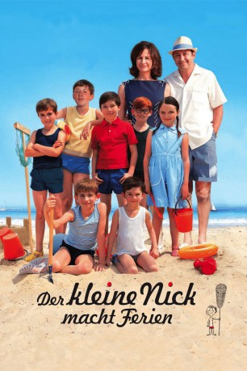

#155 Der Kleine Nick macht Ferien
 gesehen am 30.08.2016
gesehen am 30.08.2016
 
 IMDB-Wertung: 6.2 / 10
IMDB-Wertung: 6.2 / 10  Metascore: 0
Metascore: 0 
Schule aus! Wie eine große Welle überrollen die Schuljungen den braven Hausmeister und stürzen sich in die Sommerferien. Er und der Schuldirektor bleiben im menschenleeren Paris zurück. Für den kleinen Nick geht es ab ans Meer – ein Novum in der Familiengeschichte, liebt seine Mutter doch die Bergwelt. Der Grund, sich mit ihrer diesjährigen Entscheidung dem Wunsch ihres strandliebenden Mannes anzunähern, ist etwas dominant und hat immer Bonbons in der Tasche: Die Oma begleitet die Familie in die Ferien.
Jahr: 2014
Dauer: 97 Minuten
FSK: 0
Land: Frankreich Studio: Wild BunchTonspuren:
Untertitel:
Auflösung: 1080p (1920×1040) Größe: 4700 MB
Genre: Komödie, Familie
Regisseur: Laurent Tirard
Drehbuch: René Goscinny, Jean-Jacques Sempé, Laurent Tirard, Jaco Van Dormael, Grégoire Vigneron
Soundtrack: Éric Neveux
Darsteller:
 Valérie Lemercier als La mère de Nicolas
Valérie Lemercier als La mère de Nicolas Kad Merad als Le père de Nicolas
Kad Merad als Le père de Nicolas Bouli Lanners als M. Bernique
Bouli Lanners als M. Bernique- Luca Zingaretti als Le producteur
 Julie Engelbrecht als La jeune Allemande
Julie Engelbrecht als La jeune Allemande Niccolò Senni als L'assistant du producteur
Niccolò Senni als L'assistant du producteur- Guillaume Rumiel Braun als Le journaliste
 Audrey Quoturi als Maman à la sortie d'école , uncredited
Audrey Quoturi als Maman à la sortie d'école , uncredited Dominique Lavanant als Mémé
Dominique Lavanant als Mémé François-Xavier Demaison als Le Bouillon
François-Xavier Demaison als Le Bouillon- Mathéo Boisselier als Le petit Nicolas
- Judith Henry als Mme Bernique
- Francis Perrin als Le directeur
- Daniel Prévost als M. Moucheboume
- Bruno Lochet als M. Leguano
- Fabienne Galula als Mme Leguano
- Erja Malatier als Isabelle
- Chann Aglat als Marie-Edwige
- Simon Bouvier als Blaise
- Hugo Sepulveda als Fructueux
- Rémi Lardy als Crépin
- Marius Audibert als Djodjo
- Clément Burguin als Côme
- Lionel Abelanski als L'architecte des bacs à sable
- Christian Hecq als Le colonel
- Anne-Lise Kedvès als La femme du colonel
- Jean-Michel Lahmi als Le patron de la buvette
- Sandra Dorset als La mère de Djodjo
- Barbara Bolotner als La serveuse de la buvette
- Joël Lefrançois als Alphonse le braconnier
- Guillaume Clemencin als Le coiffeur
- Nathalie Beder als La maquilleuse
- Stéphanie Papanian als La costumière
- Myriam Tekaïa als La starlette
- Christophe Meynet als Barman Mocambo
- Alexandre Picot als Videur Mocambo
- Flavien Dareau als Le serveur
- Christian Valsamidis als Le curé
- Jean-Claude Billaud als Officier gendarme
Datei: X:\2-Dilogie(G-M)\Kleine Nick\Kleine Nick macht Ferien, Der (2014, FSKo.Al., 1920x1040).mkv seit 13.02.2015
Festplatte: HD Collection-2(A-Z)-3(A-M)
 Alle Filme aus Gruppe '2-Dilogie(G-M)\Kleine Nick'
Alle Filme aus Gruppe '2-Dilogie(G-M)\Kleine Nick'